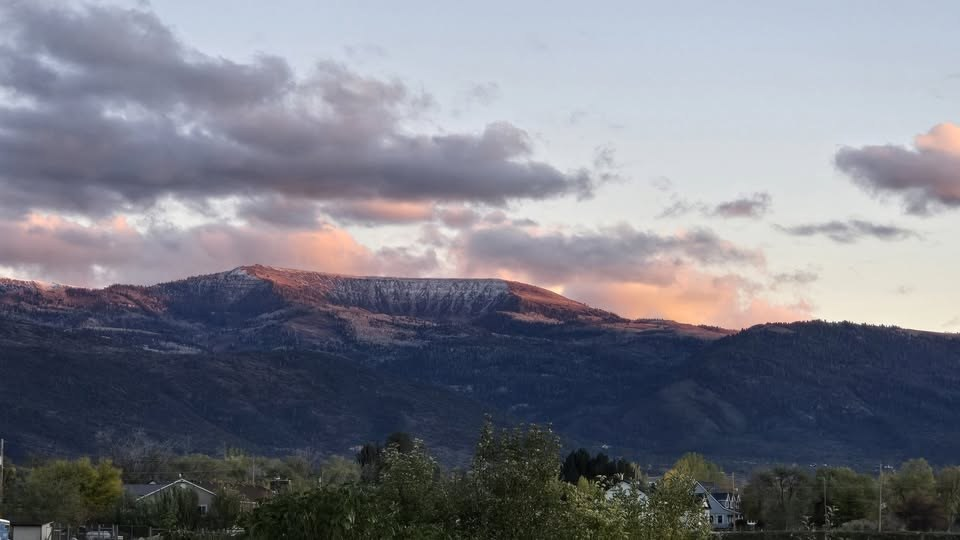

Sunday
Pasta · Fried Rice · Grammy Sherry’s Xie Xie Bu Ke Qi Noodles
Draft recipes linked. Some are archived family recipes; others are labeled trials pending verification.

Good food lovely people praiseworthy purpose
A place to gather with Jesus, refuel, and remember what really matters.
Learning to inhabit Zion through the ordinary practices of family life.
ONE OF ONE HUNDRED LATE-LIFE INHERITANCES
I am imagining one hundred things Jesus may want me to receive before I die. One of them is this restaurant: a gift I believe I must learn to recognize, build, and inhabit. Some of heaven's richest inheritances may look like nothing much to the world—or even to me, at first.
Read the story of the hundred inheritances, the Nanomarathon, and learning to receive →
Good food is just the beginning. Jesus is at the table—and we believe there are more with us than we can see. Like what we've cooked? We'll give away the secrets, teach you the recipe, and help you build your own One Week Menu and Food Kit. Learn with friends, neighbors, and Jesus.
A new kind of restaurant: a living menu, revisited together every week.
Rather than pretending the menu was carved in stone, we ask again each week: Is this still what we want to cook, share, and eat? Here is the family's seven-day rhythm. Explore alternatives, follow recipes, and imagine your own family table.
Common consent, practiced at the family table. Inspired in part by Andy Groft’s explorations of Zion, our future Family Table Council will invite every family member to contribute—not merely to cast a vote, but to speak, listen, reconsider, and work toward a decision everyone can willingly support. Voting can reveal preferences; it is not a substitute for patient discussion or consensus. No one should be intimidated, silenced, or pressured into agreement. The question is not only “What won?” but “Have we heard one another, and what can we agree to try together?”
Interactive prototype: choices you make here are your own preview, not a change to the restaurant's official menu. Only the family can publish the actual weekly choices. No orders or reservations are being accepted.
A family restaurant, a living experiment, and one hoped-for inheritance.
Jesus Mountain Restaurant is centered on a home kitchen in Spring City, Utah, beneath Horseshoe Mountain — the mountain Greg calls Jesus Mountain. It grows out of decades of family meals, hospitality, and memory, and it is part of My Jesus-Greg WORLD: an invitation to reconsider ordinary meals, kitchens, and family gatherings as potentially extraordinary experiences — because feeding people can be a sacred act.
Greg sees this restaurant as one of one hundred late-life inheritances he hopes Jesus will help him receive. Read the longer reflection on inheritance, belief, and the Nanomarathon.
Prototype 001 placeholder — photographs are coming.
Real photographs of the mountain, the kitchen, and the table will live here. The four tile photographs on this homepage are temporary placeholders taken from the approved design mockup; the mountain hero photograph and the logo above are the real, supplied artwork.
Prototype 001 placeholder — this doorway is coming.
Jesus TV is Greg’s way of looking twice at an ordinary scene — a kitchen table, a church door, a familiar street — and asking what else it might mean if Jesus is present in it. A future page will open that part of My Jesus-Greg WORLD from here.
Prototype 001 placeholder — contact details are coming.
Jesus Mountain Restaurant is in Spring City, Utah. It is not yet presented as a conventional public restaurant, so no address, hours, ordering, or reservations are listed here. Contact information will be added when Greg is ready to publish it.
How did a family kitchen, a mountain, and years of pondering become Jesus Mountain Restaurant? Follow the real work, the imagined possibilities, and the people helping build it—one meal and one day at a time.
How Jesus and Greg Built Jesus Mountain Restaurant Together—with the Angels →
Jesus Mountain Restaurant is performance art—and 100% real. It is also a home gathering and, in our estimation, always a Jesus People Potluck. Families feed families; friends feed friends. No money is charged. Guests need not bring food: conversation, friendship, testimony, song, and the spiritual nourishment we give one another are contributions of infinite worth.
Every meal here, past and present, belongs to the Jesus People Potluck—even when we didn't recognize it. This description expresses our hospitality, not an exemption from applicable law.
All rights reserved; all love freely given.